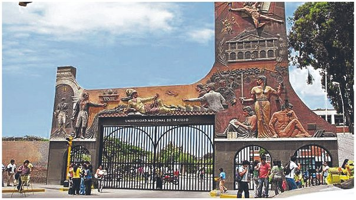

|
Un 10 de mayo de 1824, cuando faltaban 88 días para la Batalla de Junín, durante su permanencia en su cuartel de Huamachuco el Libertador Simón Bolívar, a sugerencia de José Faustino Sánchez Carrión, firmó la resolución con la que se creaba la Universidad Nacional de Trujillo. Han pasado 194 años desde aquella fecha histórica y miles de ilustres peruanos han pasado por sus aulas. César Abraham Vallejo Mendoza, Antenor Orrego Espinoza, Víctor Raúl Haya de la Torre, Ciro Alegría, Eduardo González Viaña, formaron pate de la primera universidad republicana del Perú. Tras firmase el decreto de su fundación, esta no pudo ser instalada inmediatamente porque el país atravesaba una situación política muy complicada; sin embargo, es allí que nuevamente surge la figura de "El Solitario de Sayán”, como se le conocía a José Faustino Sánchez Carrión, quien con mucha vehemencia inicia su lucha para que se concrete la instalación de la universidad y con sendas comunicaciones consiguió su objetivo. El 12 de octubre de 1831, siendo presidente de la República el Mariscal Agustín Gamarra, se produce la instalación en una ceremonia realizada en la capilla interior del Colegio Seminario de San Carlos y San Marcelo. El 23 de noviembre del mismo año el Supremo Gobierno nombró como patronos de la Universidad a Santo Tomás y Santa Rosa de Lima y tuvo como primer rector a Carlos Pedemonte y Talavera. Según consta en los archivos de la UNT, entre las primeras cátedras que se dictaron figuran Teología Dogmática y Mora, Cánones y Leyes; Anatomía y Medicina; Filosofía y Matemáticas. Además, sus primeros grados académicos otorgados fueron los de Bachiller, Maestro y Doctor en Leyes y Sagrados Cánones. En el año 1834 los alumnos se trasladan al local que se ubica en la esquina de la Plaza de Armas de Trujillo conocido como Compañía de Jesús. En ese entonces la denominación era Universidad Nacional de La Libertad. Es a partir del año 1941 que se inicia las gestiones para poder construir un local más amplio. En ese tiempo el ilustre filántropo Vicente Gonzales de Orbegoso y Moncada donó parte de su propiedad del fundo San Andrés, un terreno de más de 430 metros cuadrados el cual sirvió para edificar lo que hoy conocemos como la Ciudad Universitaria. Desde esa fecha, ya con mayores espacios, se abren otras carreras y miles de jóvenes de diversas partes del país llegabann para poder estudiar en dicha casa de Estudios que pasó a denominarse Universidad Nacional de Trujillo. |
 |